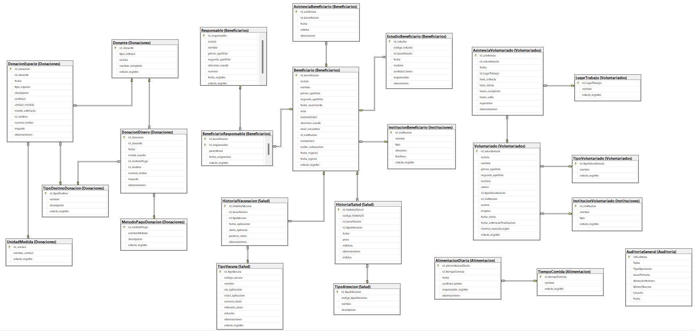
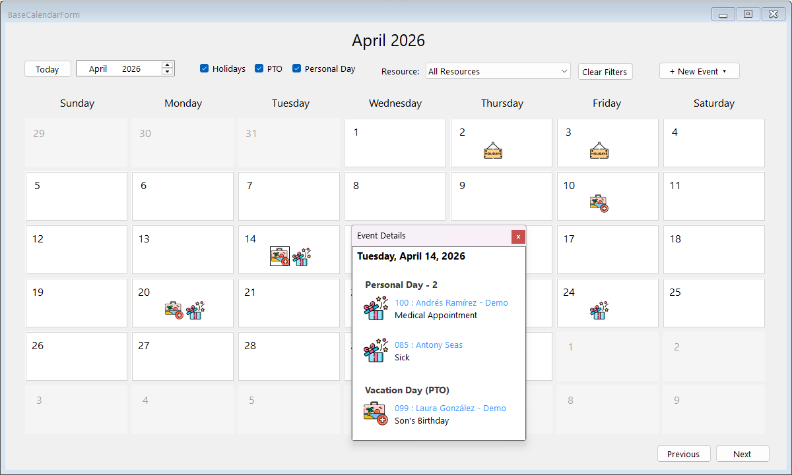

Karleny Pérez Calderón
📊 Transforming raw data into clear, strategic, and actionable business insights.
Systems Engineer and aspiring Data Analyst focused on transforming complex data into intuitive and business-driven insights through Power BI, SQL, and analytical storytelling. This portfolio showcases interactive dashboards and data projects centered on customer behavior, business performance, and decision-oriented analytics.
Featured Data Projects
Interactive Power BI dashboards focused on customer behavior, business performance, and strategic analytics.
Customer Churn & Revenue Risk Analysis
Interactive Power BI dashboard designed to analyze customer churn patterns, revenue risk exposure, and retention opportunities through behavioral, geographic, and financial analysis.
Business Goal
Identify the main factors influencing customer churn and uncover strategic opportunities to improve customer retention, reduce revenue loss, and support business decision-making.
Analytical Walkthrough
Geographic Risk Analysis
The analysis begins by identifying churn concentration across California cities. San Diego and Los Angeles emerge as the highest-risk regions, showing the strongest combination of customer churn and revenue exposure.
Customer Behavior Analysis
Behavioral analysis reveals that churn is significantly higher among month-to-month contracts and newer customers, while long-tenure customers demonstrate stronger retention patterns over time.
Revenue & Financial Exposure
Financial analysis estimates over $5.7M in potential revenue exposure, with month-to-month customers representing the highest financial risk segment.
Churn Drivers & Retention Strategy
The final stage identifies competitor influence as primary churn driver, while protection-related services demonstrate stronger retention performance among subscribed customers.
✦ Key Insights
- San Diego and Los Angeles present the highest churn concentration and revenue exposure.
- Month-to-month contracts show significantly higher churn risk.
- New customers exhibit the weakest retention rates.
- Protection-related services correlate with stronger customer retention.
- Customers in higher pricing tiers demonstrate greater churn sensitivity.
💡 Strategic Recommendations
- Strengthen retention campaigns for high-risk month-to-month customers.
- Promote protection-related services through bundled offerings.
- Optimize pricing strategies for mid-to-high pricing segments.
- Position entertainment services as complementary value drivers rather than retention anchors.
- Improve competitive differentiation through customer experience and value perception initiatives.

Spotify Streaming Performance Dashboard
Interactive Spotify analytics dashboard focused on streaming performance, track popularity, release trends, and music engagement insights through dynamic Power BI visualizations.
Business Goal
Design an interactive music analytics dashboard capable of exploring streaming performance, track popularity, artist metrics, and engagement patterns through visually compelling storytelling.
Analytical Walkthrough
Streaming Performance Analysis
The dashboard highlights the most streamed tracks and compares their performance against average platform streaming benchmarks.
Track & Artist Insights
Users can dynamically explore artist performance, release dates, track characteristics, and popularity metrics through interactive filters and KPI cards.
Music Trend Visualization
Temporal visualizations reveal release activity trends and streaming distribution patterns across different years and tracks.
Dashboard Experience & Design
The project emphasizes immersive dashboard aesthetics, combining storytelling, modern UI design, and interactive navigation to enhance user engagement.
✦ Key Insights
- Blinding Lights emerges as the top streaming track in the dataset.
- Track popularity distribution shows strong concentration among top-ranked songs.
- Streaming activity increases significantly in recent release years.
- Interactive filtering improves exploration of artist and track-level performance.
- Dashboard aesthetics and layout enhance analytical readability and storytelling.

Additional Technical Experience
SQL Database System Design
Designed and developed a complete relational database solution for a real nonprofit organization using SQL Server, Microsoft Access, and Transact-SQL. The system included database architecture, stored procedures, data normalization, and user-friendly Access forms connected through ODBC integration to enable non-technical staff to manage operational data efficiently.
Technical Scope
- Relational database modeling, schema architecture, and normalization processes.
- Creation of tables, relationships, constraints, and integrity management.
- Development of SQL queries, stored procedures, and database functions using Transact-SQL.
- Implementation of operational forms and administrative interfaces using Microsoft Access and VBA.
- ODBC integration between Microsoft Access and SQL Server for centralized data management.
- Designed user-oriented workflows to allow non-technical staff to interact with the system efficiently.

Enterprise Development Internship Project
Developed a PTO Calendar module for an internal ERP system during a professional internship in a real enterprise environment using C#, .NET 8, and Windows Forms. The system was designed to manage employee time-off requests, calendar event tracking, historical records, and operational workflows through a structured desktop application integrated with backend business logic and nested JSON data handling.
Technical Scope
- Full-stack desktop application development using C# and .NET 8.
- Implementation of layered architecture for backend and frontend separation.
- Development of CRUD operations for PTO event management and employee requests.
- Historical tracking and filtering of employee records across years.
- Management of nested JSON structures for backend data handling and integration.
- Interactive calendar-based interface built with Windows Forms.
- Collaborative enterprise development workflow using GitFlow version control practices.
